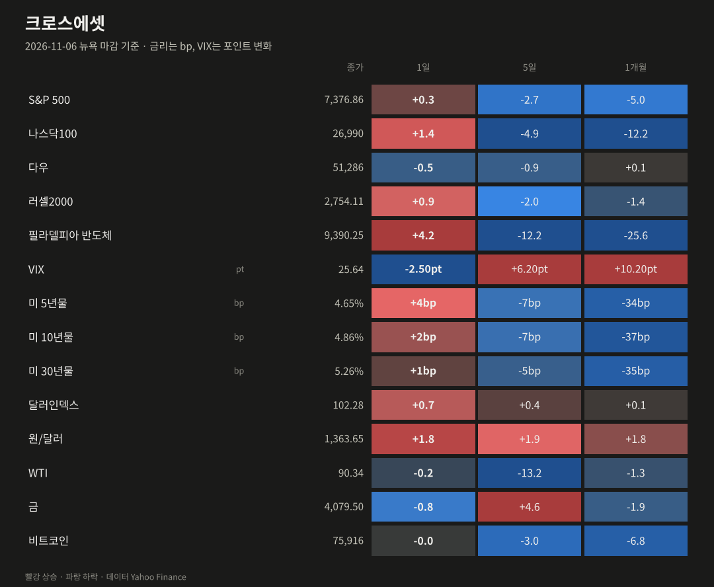
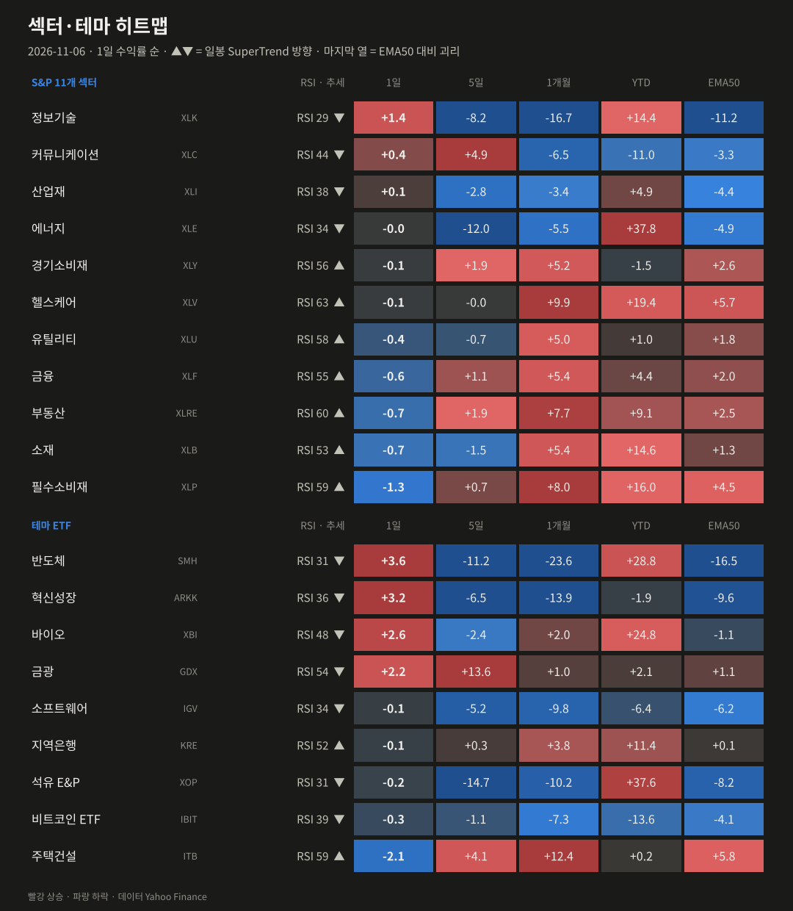
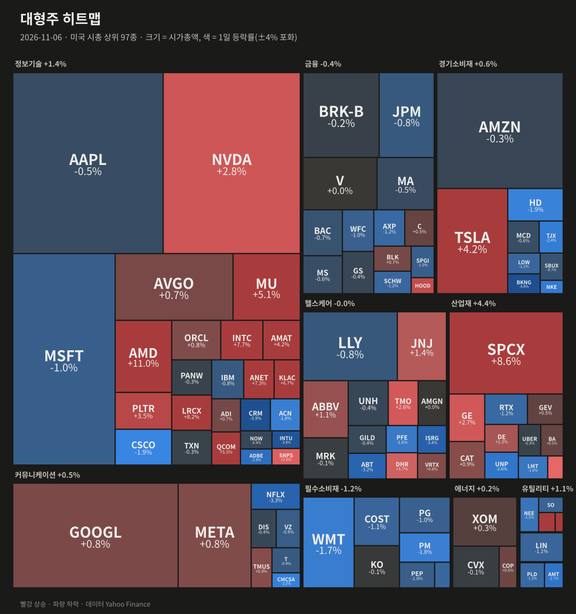
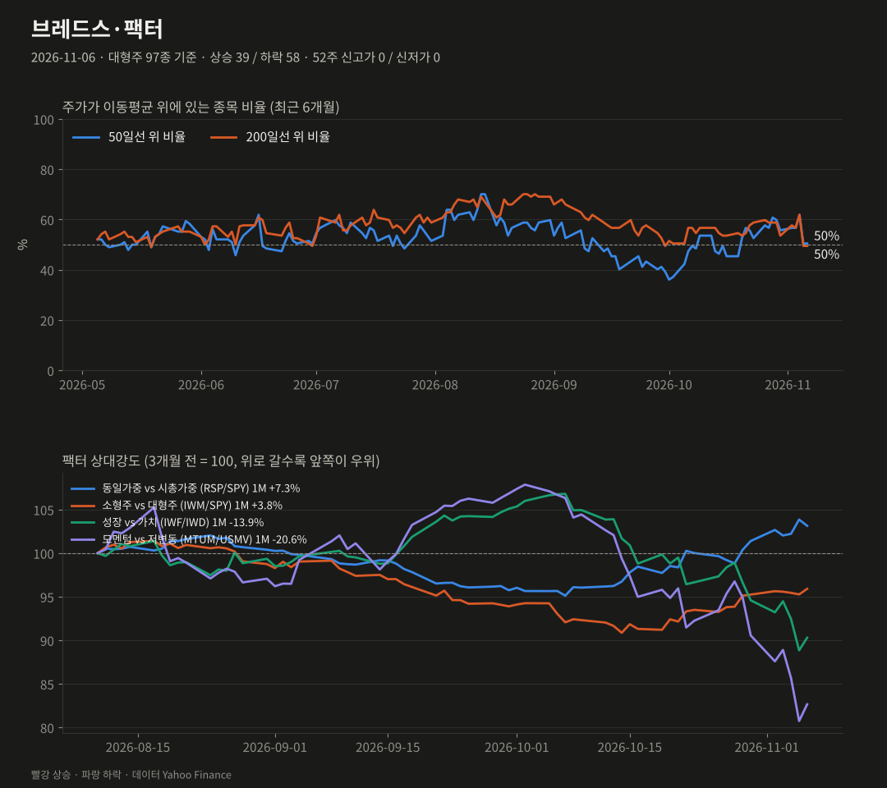
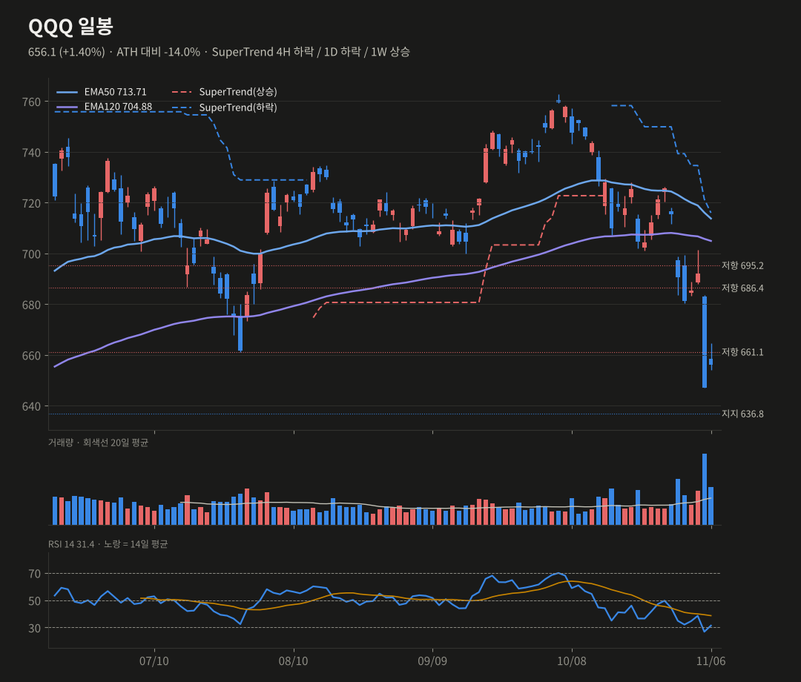
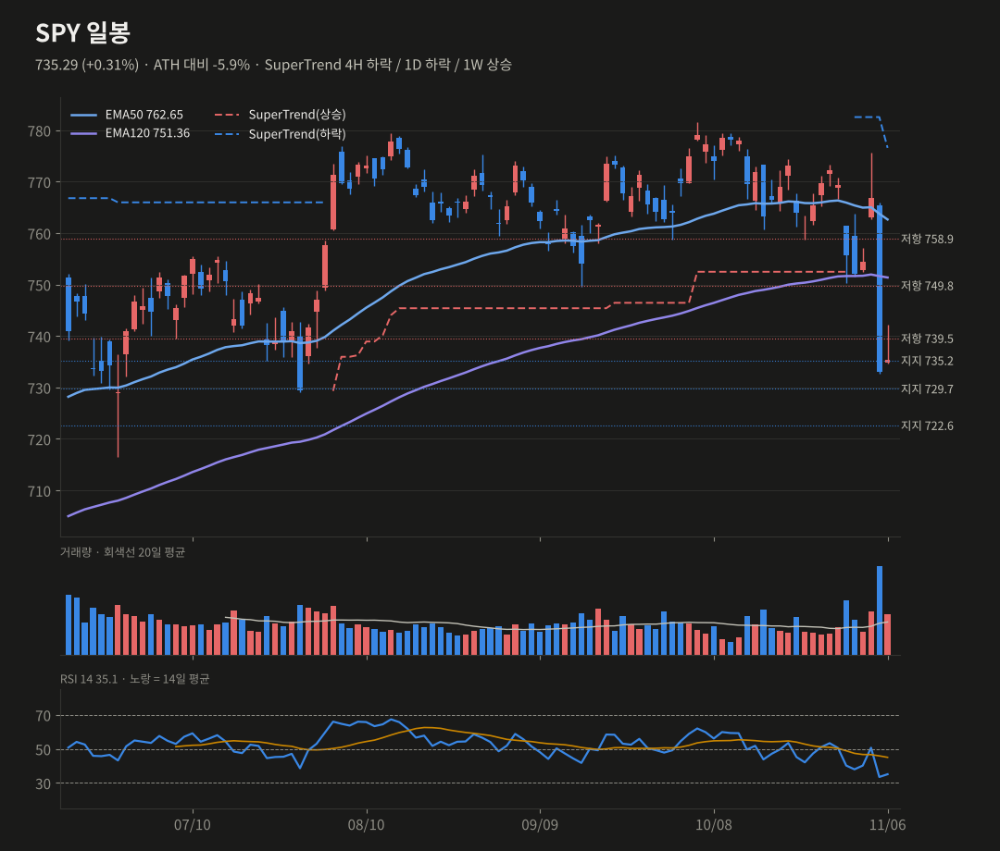
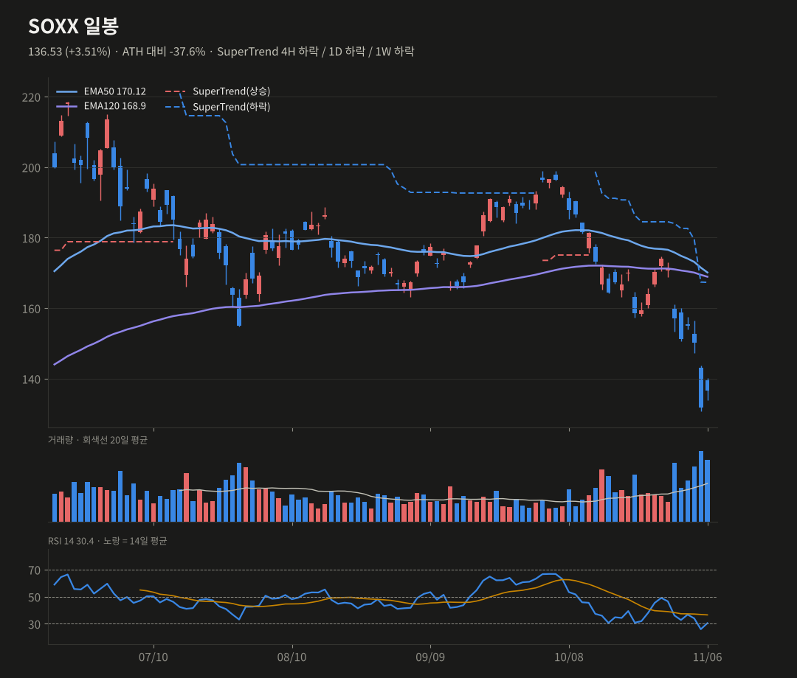
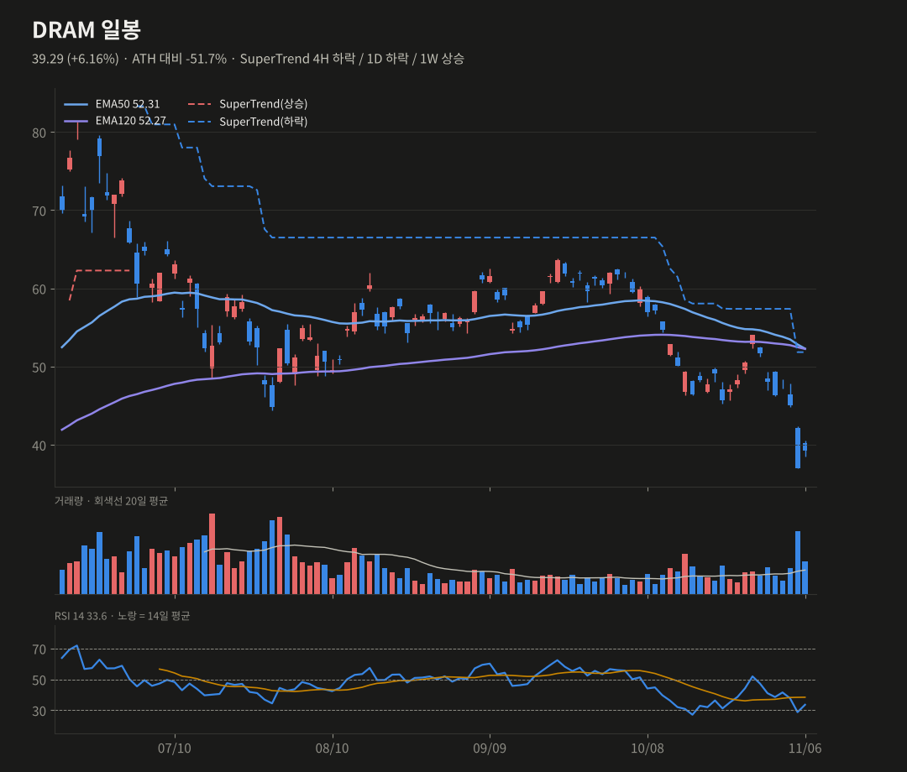

미증시 마감 브리핑
11/6(금) 뉴욕 마감 기준 · 생성 2026-11-07 07:41 KST
고용 서프라이즈(+16.5만) 속에 반도체가 반등(SOX +4.2%)했어요. 나스닥100은 +1.4%였지만 주간으로는 −5%로 AI주에 혹독한 한 주를 마쳤어요.
S&P 5007,376.86+0.31%
나스닥10026,990+1.35%
다우51,286-0.46%
러셀20002,754.11+0.89%
반도체(SOX)9,390.25+4.21%
VIX25.64-2.50pt
미 10년물4.86%+2.20bp
원/달러1,363.65+1.76%
요약
- 고용 +16.5만으로 예상의 약 3배였어요. 금리는 올랐지만 반도체가 SOX +4.2%로 반등했어요.
- 주간으로는 QQQ −5.0%, SPY −2.7%로 AI주에 혹독한 한 주였어요.
- QQQ는 주봉 추세(649.6)를 지켰고, DRAM은 주봉 EMA120(38.5)을 회복했어요.
- 다음 주 11/10 CPI가 분기점이에요. 12월 인상 확률은 65% 이상이에요.
종합 판단
고용 호조에 반도체 과매도 되돌림이 더해진 하루였어요. QQQ는 주봉 추세선을 지켜 최악은 피했어요. 하지만 일봉 추세는 모두 하락이고, 반등이 반도체에만 쏠려 폭이 좁았어요. 12월 인상 확률이 65%를 넘는 상황이라, 다음 주 CPI가 반등 지속 여부의 분기점이에요.
고용 호조에 반도체 과매도 되돌림이 더해진 하루였어요. QQQ는 주봉 추세선을 지켜 최악은 피했어요. 하지만 일봉 추세는 모두 하락이고, 반등이 반도체에만 쏠려 폭이 좁았어요. 12월 인상 확률이 65%를 넘는 상황이라, 다음 주 CPI가 반등 지속 여부의 분기점이에요.
무엇이 시장을 움직였나
- 10월 고용: 비농업 고용이 +16.5만 명으로 예상 5.9만 명을 크게 웃돌았고, 실업률은 4.1%(예상 4.2%)였어요. 10년물이 4.86%(+2.2bp)로 올랐고, 12월 인상 확률은 65% 이상을 유지했어요.
- 반도체 되돌림: AMD +11.0%, LRCX +8.2%, INTC +7.7%, ANET +7.3%, VST +10.6%였어요. 대형 반도체 8종이 전날 낙폭의 3분의 1 이상을 되찾았어요. 제프리스는 이번 매도를 '반사적일 뿐 펀더멘털 리셋은 아니다'라고 봤어요.
- 약세: 필수소비재(−1.3%), 소재, 부동산과 BKNG(−4.8%), CRM(−3.9%), INTU(−3.8%)가 약했어요. 장중에는 실적 실망 종목이 급락했어요(AXON −18%, TEAM −16%).
- VIX는 25.6(−2.5pt)으로 아직 높아요. 달러인덱스는 +0.7%, 비트코인은 7.6만 달러로 보합이에요.
- 주간 성적: QQQ −5.0%, SPY −2.7%, DIA −1.0%, RSP −1.0%였어요. 정보기술은 1개월 −16.7%이고, 헬스케어는 +9.9%예요.

| 자산 | 종가 | 1일 | 5일 | 1개월 |
|---|---|---|---|---|
| S&P 500 | 7376.86 | +0.31% | -2.68% | -5.00% |
| 나스닥100 | 26989.99 | +1.35% | -4.91% | -12.16% |
| 다우 | 51285.73 | -0.46% | -0.94% | +0.11% |
| 러셀2000 | 2754.11 | +0.89% | -2.05% | -1.43% |
| 필라델피아 반도체 | 9390.25 | +4.21% | -12.15% | -25.61% |
| VIX | 25.64 | -2.50pt | +6.20pt | +10.20pt |
| 미 5년물 | 4.648 | +4.0bp | -7.3bp | -34.3bp |
| 미 10년물 | 4.859 | +2.2bp | -7.0bp | -37.2bp |
| 미 30년물 | 5.26 | +0.9bp | -4.9bp | -34.6bp |
| 달러인덱스 | 102.28 | +0.72% | +0.39% | +0.14% |
| 원/달러 | 1363.65 | +1.76% | +1.92% | +1.83% |
| WTI | 90.34 | -0.20% | -13.23% | -1.26% |
| 금 | 4079.5 | -0.83% | +4.63% | -1.86% |
| 비트코인 | 75916.07 | -0.03% | -2.98% | -6.85% |

| 섹터·테마 | 1일 | 5일 | 1개월 | YTD | RSI | 일봉 추세 |
|---|---|---|---|---|---|---|
| 반도체 SMH | +3.62% | -11.20% | -23.60% | +28.8% | 31 | 하락 |
| 혁신성장 ARKK | +3.16% | -6.55% | -13.86% | -1.9% | 36 | 하락 |
| 바이오 XBI | +2.57% | -2.42% | +1.96% | +24.8% | 48 | 하락 |
| 금광 GDX | +2.16% | +13.63% | +1.01% | +2.1% | 54 | 하락 |
| 정보기술 XLK | +1.45% | -8.23% | -16.71% | +14.4% | 29 | 하락 |
| 커뮤니케이션 XLC | +0.43% | +4.89% | -6.50% | -11.0% | 44 | 하락 |
| 산업재 XLI | +0.12% | -2.83% | -3.40% | +4.9% | 38 | 하락 |
| 에너지 XLE | -0.02% | -12.00% | -5.55% | +37.8% | 34 | 하락 |
| 경기소비재 XLY | -0.05% | +1.91% | +5.25% | -1.5% | 56 | 상승 |
| 헬스케어 XLV | -0.06% | -0.04% | +9.90% | +19.4% | 63 | 상승 |
| 소프트웨어 IGV | -0.13% | -5.19% | -9.77% | -6.4% | 34 | 하락 |
| 지역은행 KRE | -0.15% | +0.26% | +3.75% | +11.4% | 52 | 상승 |
| 석유 E&P XOP | -0.19% | -14.72% | -10.19% | +37.6% | 31 | 하락 |
| 비트코인 ETF IBIT | -0.35% | -1.11% | -7.31% | -13.6% | 39 | 하락 |
| 유틸리티 XLU | -0.39% | -0.69% | +5.02% | +1.0% | 58 | 상승 |
| 금융 XLF | -0.59% | +1.15% | +5.40% | +4.4% | 55 | 상승 |
| 부동산 XLRE | -0.68% | +1.92% | +7.71% | +9.1% | 60 | 상승 |
| 소재 XLB | -0.73% | -1.50% | +5.44% | +14.6% | 53 | 상승 |
| 필수소비재 XLP | -1.28% | +0.74% | +7.98% | +16.0% | 59 | 상승 |
| 주택건설 ITB | -2.13% | +4.09% | +12.41% | +0.2% | 59 | 상승 |

| 상승 상위 | 1일 | 거래량(20일 대비) | 하락 상위 | 1일 | 거래량 |
|---|---|---|---|---|---|
| AMD | +11.04% | x1.75 | BKNG | -4.77% | x1.02 |
| VST | +10.55% | x1.77 | CRM | -3.94% | x0.92 |
| SPCX | +8.62% | x1.06 | INTU | -3.76% | x1.15 |
| LRCX | +8.23% | x1.42 | ISRG | -3.36% | x0.78 |
| INTC | +7.71% | x1.25 | NFLX | -3.28% | x0.77 |
| ANET | +7.31% | x1.56 | ABT | -3.23% | x0.85 |

대형주 97종: 상승 39 / 하락 58 · 50일선 위 50.5% (전일 50.5%, 5일 전 55.7%) · 200일선 위 49.5% · 52주 신고가 0 / 신저가 0
오른 종목 39, 내린 종목 58로 반도체·AI 쪽에 쏠린 반등이었어요. 동일가중(RSP −0.38%)이 시총가중보다 0.69%p 약했어요. SMA50 위 종목 비율은 50.5%로 그대로예요.
| 팩터 스프레드 | 1일 | 5일 | 1개월 |
|---|---|---|---|
| 동일가중 vs 시총가중 (RSP/SPY) | -0.69% | +1.71% | +7.33% |
| 소형주 vs 대형주 (IWM/SPY) | +0.68% | +0.70% | +3.78% |
| 성장 vs 가치 (IWF/IWD) | +1.63% | -4.54% | -13.95% |
| 모멘텀 vs 저변동 (MTUM/USMV) | +2.38% | -8.72% | -20.59% |
기술적 분석 · 확률
TradingView 설정과 맞춘 지표(EMA50·EMA120, SuperTrend ATR20×4, RSI14, MACD 12/26/9). 확률은 차트 기반 추정치예요.
QQQ 656.1 +1.40%
SuperTrend 4H 하락 / 1D 하락 / 1W 상승 · RSI 31.37
단기 반등 55% (+5) · 스윙 상승 30% (+5)
주봉 종가가 SuperTrend 649.6 위에서 마감해, 주중 하락 전환이 무효가 되고 상승으로 확정됐어요. 4H·일봉 RSI도 30 위로 복귀했어요. 일봉 히스토그램은 아직 확대 중(−6.64)이고, 일봉 EMA120(704.9) 아래예요.
상방 661.1 돌파 → 671.4(주봉 EMA50), 686.4
하방 649.6 이탈 → 636.8, 629.2
SuperTrend 4H 하락 / 1D 하락 / 1W 상승 · RSI 31.37
단기 반등 55% (+5) · 스윙 상승 30% (+5)
주봉 종가가 SuperTrend 649.6 위에서 마감해, 주중 하락 전환이 무효가 되고 상승으로 확정됐어요. 4H·일봉 RSI도 30 위로 복귀했어요. 일봉 히스토그램은 아직 확대 중(−6.64)이고, 일봉 EMA120(704.9) 아래예요.
상방 661.1 돌파 → 671.4(주봉 EMA50), 686.4
하방 649.6 이탈 → 636.8, 629.2
SPY 735.29 +0.31%
SuperTrend 4H 하락 / 1D 하락 / 1W 상승 · RSI 35.11
단기 반등 50% (+5) · 스윙 상승 35%
735.2를 지켰지만 일봉 EMA120(751.4) 아래이고, 일봉 히스토그램도 확대 중이에요. 주봉 SuperTrend 상승(705.4)과 주봉 EMA50(723.1)이 중기 방어선이에요.
상방 739.5 회복 → 749.8, 751.4(EMA120)
하방 729.7 이탈 → 723.1(주봉 EMA50), 716.6
SuperTrend 4H 하락 / 1D 하락 / 1W 상승 · RSI 35.11
단기 반등 50% (+5) · 스윙 상승 35%
735.2를 지켰지만 일봉 EMA120(751.4) 아래이고, 일봉 히스토그램도 확대 중이에요. 주봉 SuperTrend 상승(705.4)과 주봉 EMA50(723.1)이 중기 방어선이에요.
상방 739.5 회복 → 749.8, 751.4(EMA120)
하방 729.7 이탈 → 723.1(주봉 EMA50), 716.6
SOXX 136.53 +3.51%
SuperTrend 4H 하락 / 1D 하락 / 1W 하락 · RSI 30.45
단기 반등 50% (+5) · 스윙 상승 25%
+3.5% 반등으로 일봉 RSI가 30 위로 올라왔고 4H 히스토그램도 상승 전환했어요. 주간은 큰 폭 하락 마감이고, 일봉·주봉 SuperTrend 모두 하락이라 스윙은 그대로예요(ATH −37.6%).
상방 140 회복 → 151.7(주봉 EMA50)
하방 131 이탈 → 122.9
SuperTrend 4H 하락 / 1D 하락 / 1W 하락 · RSI 30.45
단기 반등 50% (+5) · 스윙 상승 25%
+3.5% 반등으로 일봉 RSI가 30 위로 올라왔고 4H 히스토그램도 상승 전환했어요. 주간은 큰 폭 하락 마감이고, 일봉·주봉 SuperTrend 모두 하락이라 스윙은 그대로예요(ATH −37.6%).
상방 140 회복 → 151.7(주봉 EMA50)
하방 131 이탈 → 122.9
DRAM 39.29 +6.16%
SuperTrend 4H 하락 / 1D 하락 / 1W 상승 · RSI 33.56
단기 반등 50% (+5) · 스윙 상승 30% (+5)
+6.2%로 주봉 종가가 EMA120(38.5)을 회복했어요. 주봉 MACD선도 0선 위로 되돌아왔어요. 4H 거래량이 평균의 4.4배로 저가 매수가 들어왔어요. 일봉은 SuperTrend 하락(51.9)이고 EMA 밀집대(52.3)까지 공간이 커요.
상방 41.5 돌파 → 44.4, 46.6(주봉 EMA50)
하방 38.5 이탈 → 37.0, 주봉 SuperTrend 29.4
SuperTrend 4H 하락 / 1D 하락 / 1W 상승 · RSI 33.56
단기 반등 50% (+5) · 스윙 상승 30% (+5)
+6.2%로 주봉 종가가 EMA120(38.5)을 회복했어요. 주봉 MACD선도 0선 위로 되돌아왔어요. 4H 거래량이 평균의 4.4배로 저가 매수가 들어왔어요. 일봉은 SuperTrend 하락(51.9)이고 EMA 밀집대(52.3)까지 공간이 커요.
상방 41.5 돌파 → 44.4, 46.6(주봉 EMA50)
하방 38.5 이탈 → 37.0, 주봉 SuperTrend 29.4




일정
- 11/10 10월 CPI
- AI 데이터센터 정책 뉴스
- 12/9 FOMC(인상 확률 65% 이상)
출처
- Chip Stocks Bounce Back in the Stock Market Today Live, November 6, 2026 (StockTitan)
- Nasdaq 100 Rebounds 2%, Payrolls Beat: Stock Market Today (Benzinga)
- Stock market today: Nasdaq and S&P 500 rebound, Dow slips to cap bruising week for AI stocks (Yahoo Finance)
데이터 Yahoo Finance·Nasdaq. 색은 한국식(빨강 상승·파랑 하락). 투자 판단의 참고 자료예요. 지난 브리핑